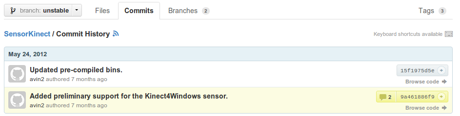

SensorKinect（也就是 OpenNI 官網所謂的 OpenNI-Compliant Sensor Driver），是從 [PrimeSense/Sensor] 分出來的，可以支援 Kinect 裝置。
不過目前（2012-12）官網提供的 OpenNI-Compliant Sensor Driver v5.1.2.1，雖然從版號看起來也是採用 unstable 分支，但實驗發現它只支援到 Kinect for Xbox，並不相容於 Kinect for Windows。
要支援 K4W 的話，得自行到 unstable 分支下載最新版才行。作者 Avin 已在 2012-05-24 將 SensorKinect 修改成支援 K4W，只是目前官方提供的下載不包含這個部份。

延伸閱讀
參考資料
文件
-
Unable to detect kinect - Google Groups 閱讀 (2012-05-20) - "Device: PrimeSense/SensorKinect/5.1.2.1: The device is not connected!"，提到 "Kinect for Windows != Kinect for Xbox"。作者 2012-05-23 提到己將 SensorKinect 修改成支援 K4W。
-
How to: Install Kinect in Linux (Mint 12, Ubuntu 12.04) « Igor Barbosa 閱讀 (2012-03-25) - 關鍵在 SensorKinect 要下載 unstable 版本的原始碼重新編譯過，否則會有 "The device is not connected" 的錯誤。